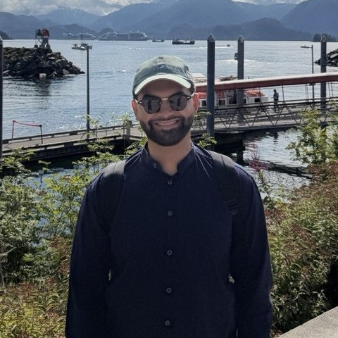

Daanish Aleem Qureshi
PhD student, Computational Biology and Biomedical Informatics
Yale University
I am a PhD student in Computational Biology and Biomedical Informatics at Yale, working under David van Dijk. I develop methods for AI agents and biological foundation models: knowledge stores that agents can retrieve from accurately and efficiently, rigorous evaluation of the hypotheses and analyses agents generate, and the training and interpretability of foundation models. I work with single-cell data, using models such as Cell2Sentence-Scale (C2S-Scale) from David's group, and with DNA methylation data alongside Albert Higgins-Chen. Before Yale I studied applied mathematics, biology and engineering at Brown, then co-founded LitGrab, which was acquired by Impiricus, where I am VP of AI Engineering. I am also an angel investor in various early-stage AI startups. I want these methods to reach drug discovery and clinical development.
Research interests
- AI agents for biological discovery
- Accurate and efficient knowledge stores for agentic retrieval
- Rigorous, reproducible evaluation of AI-generated scientific hypotheses
- Development and interpretability of biological foundation models
News
- Our work on social and lifestyle determinants of mental health is a podium abstract at AMIA 2026 in Dallas.
- Drug release modeling with physics-informed neural networks is out in the Journal of Drug Delivery Science and Technology.
- Blepharospasm in the All of Us Research Program, a poster at the ASOPRS Fall Scientific Symposium in New Orleans.
- Started the PhD in Computational Biology and Biomedical Informatics at Yale.
- The drug release work was featured in Brown News.
- Ultrasound crack measurement in HDPE is out in ASME JNDE.
Publications
Preprints
- Predicting Healthcare Provider Engagement in SMS Campaigns arXiv:2511.17658, 2025 arXiv
Journal articles
- Drug release modeling using Physics-Informed Neural Networks Journal of Drug Delivery Science and Technology 125, 108654 (2026) paperarXivBrown News
- A Machine Learning Method to Measure the Embedded Crack Length and Position in High-Density Polyethylene Using Ultrasound Time Signal ASME Journal of Nondestructive Evaluation, Diagnostics and Prognostics of Engineering Systems 9(1), 011004 (2026) paperarXiv
- Why mussel byssal plaques are tiny yet strong in attachment Matter 5(2), 710–724 (2022) paper
Abstracts and posters
- Comparison of Social and Lifestyle Determinants of Mental Health Across Racial Cohorts: An Explainable Machine Learning Analysis AMIA 2026 Annual Symposium, podium abstract, Dallas, 2026
- Phenome-Wide Analysis of Blepharospasm in the All of Us Research Program ASOPRS 57th Annual Fall Scientific Symposium, poster, New Orleans, 2026